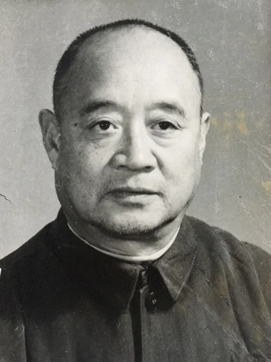
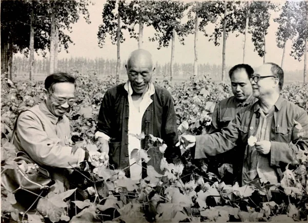
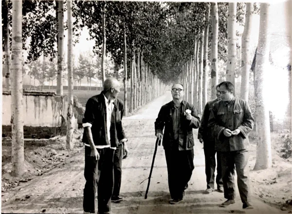
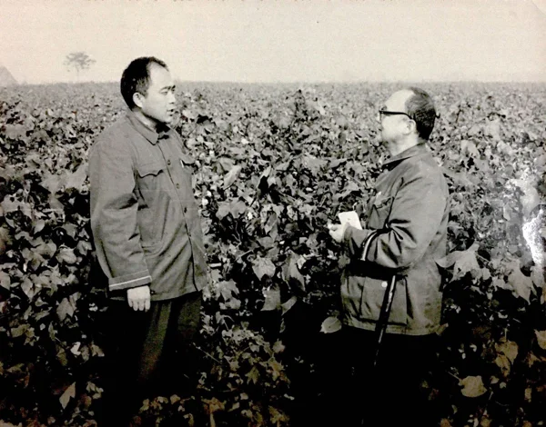
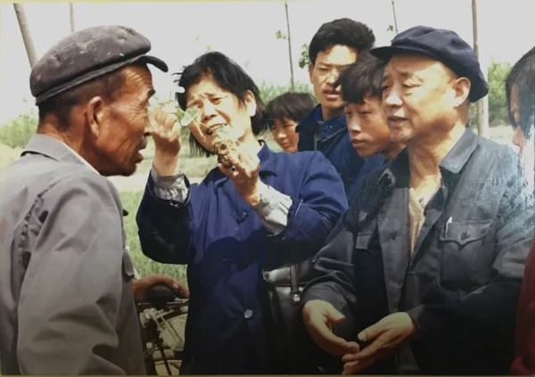
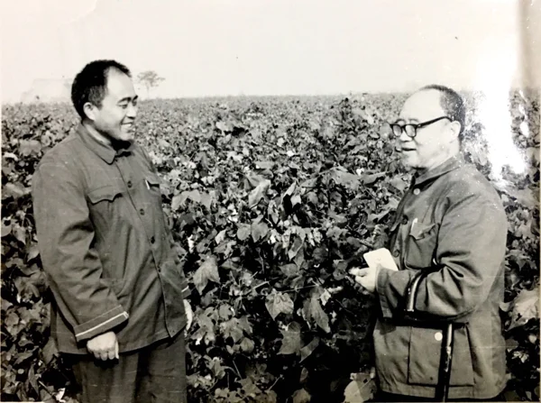
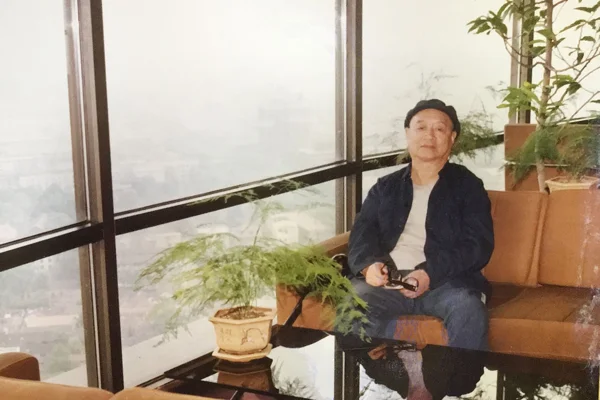
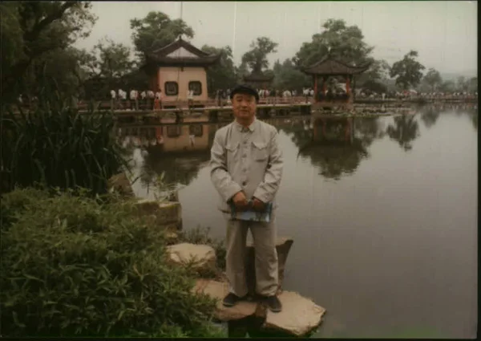
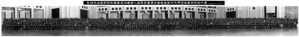

政治品格
在党的领导下，他努力学习马列主义、毛泽东思想和邓小平理论，具有丰富的实践经验。他对党的事业忠心耿耿，任劳任怨。他顾全大局、胸怀博大、不计较个人得失。
👉 点击时间节点查看详情
李庆同志出身贫苦，早年为了翻身求解放投身革命。在党的培养教育下，逐步成长为一名坚定的共产主义战士。
抗日战争初期，他出生入死，不怕牺牲，英勇作战，曾三次负伤，为抗击日本帝国主义的侵略，保卫家乡，保卫祖国山河立下不朽功勋。
解放战争时期，李庆同志在太行五地委党校工作，先后担任过秘书、副校长、总支副书记，为解放区培养了大批干部，为解放新区输送了大批人才，为夺取中国革命最终胜利作出了自己的贡献。
1957年8月，国务院科学规划委员会批准在北京成立中国农业科学院棉花研究所。1958年3月，因北京自然条件对棉花科研不具代表性，研究所整建制迁至河南省安阳县白壁镇大寒村，地处冀鲁豫晋四省棉区交汇处。
1958年至1966年，李庆同志任中国农科院棉花研究所党委书记（主持党政工作），与冯泽芳所长、胡竟良副所长等组成首任领导班子。他以高度的事业心和责任感，深入基层调查研究，认真贯彻执行党的路线、方针政策，重视农业科技在生产中的运用，为中棉所的建设和发展奠定了重要基础。
周恩来总理在全国棉花工作会议上称李庆同志为棉花"土专家"。
在此期间，李庆同志积极参与全国棉花科研工作的组织与推动：
"刚开过的棉花丰产座谈会和这次棉花群众选种座谈会都是中国植棉史上没有过的事情，这次会很重要，是棉花选种上的转折点，是群众和专家相结合的开始，是党的一条路线——群众路线。"
"文化大革命"期间，李庆同志受到极左路线的冲击，遭受严重迫害，身心受到摧残。但他仍坚持党性原则，保持革命气节，表现出了一个革命者的优秀品质。
1973年3月，李庆同志重新出来工作，任河南省农林局核心组成员。粉碎"四人帮"以后，历任省农业局核心组成员、党组成员、副局长，省农业厅党组成员、副厅长，并兼任省政府棉花办公室主任、省棉花学会第一届理事长、中国棉花学会副理事长。他坚决拥护党的十一届三中全会以来的路线、方针和政策，解放思想，实事求是，努力工作，为全省棉花生产作出了积极贡献。
李庆同志经常深入基层、深入田间地头，与农民交朋友，宣传推广麦棉套种、生物防治、地膜覆盖、营养钵育苗等植棉新技术，为我国特别是河南省棉花增产、农民增收作出了极大贡献，被誉为棉花专家，闻名省内外。
1975年秋，时任河南省棉花办公室主任的李庆同志，为推动杂交棉在河南的推广，亲自带队，组织约60名来自南阳和商丘地区的青年学员，远赴海南三亚开展大规模冬季棉花杂交制种与现场培训。此次活动历时一个多月，圆满完成制种任务，并编印了《棉花杂种优势利用》讲义。河南杂交棉面积随后扩展至十余万亩，河南成为全国杂交棉第一省。此次南繁行动被后人评价为"空前绝后"，是中国南繁事业早期的重要实践。
1981年11月5日至10日，中国棉花学会在郑州召开第三次全国棉花学术讨论会，125名代表参会。李庆同志以中国棉花学会副理事长身份致开幕词并主持了会议，并发表论文《棉花高优稳低综是发展棉花生产的方向》，系统提出"高产、优质、稳产、低成本、综合发展"的棉花生产方针，对全国棉花生产具有普遍指导意义。
1983年11月，李庆同志经中共河南省委批准离职休养。离休后，他仍然一如既往地关心全省农业和农村工作，关心农业厅各项事业的发展，支持历届领导班子开展工作。他时刻关注国内外大事，在政治上始终和党中央保持一致。
在病中他还不忘厅里工作，多次询问厅里工作情况。在自己的后事处理上，他嘱咐亲属要一切从简，服从组织的安排，充分表现了一个老党员、老干部的马列主义唯物主义信念，表现了一个革命者的高风亮节和高尚情操。
李庆同志一生追求进步，追求革命。他的一生，是革命的一生、战斗的一生，是清正廉洁、任劳任怨、勤奋工作的一生。
在党的领导下，他努力学习马列主义、毛泽东思想和邓小平理论，具有丰富的实践经验。他对党的事业忠心耿耿，任劳任怨。他顾全大局、胸怀博大、不计较个人得失。
他作风扎实，对工作严肃认真，实事求是，善于把握大局。他经常深入基层、深入田间地头，与农民交朋友，被誉为棉花专家。
他为人正派，光明磊落，平易近人，关心同志。他长期在领导岗位上工作，对自己以及亲属要求严格，生活俭朴，不搞特殊，保持了党的优良传统和作风，深受广大干部和群众的爱戴。
李庆同志的逝世，使我党失去了一位好同志、好干部、好党员。我们要以李庆同志为榜样，学习他忠于党、忠于人民、忠于革命事业，忘我工作、实事求是、勤政廉政、克己奉公、无私奉献的精神。
| 序号 | 篇名 | 时间 | 发表刊物/场合 |
|---|---|---|---|
| 1 | 《千斤皮棉的堡垒一定能攻下来》 | 1958年6月 | 全国棉花高额丰产技术座谈会报告 /《棉花知识》1958年第01期 |
| 2 | 《依靠群众进行选种》 | 1958年7月5日 | 全国棉花群众选种座谈会报告 /《棉花知识》1958年第02期 |
| 3 | 《继续破除迷信 彻底解放思想 为棉花科学研究更大的跃进而奋斗》 | 1959年 | 第二次全国棉花试验研究工作会议主题报告 /《棉花》1959年第01期 |
| 4 | 《中国棉花栽培学》 | 1959年 | 编著者之一（全书12人合著），上海科学技术出版社出版，新中国成立十周年献礼书 |
| 5 | 《棉花高优稳低综是发展棉花生产的方向》 | 1981年 | 第三次全国棉花学术讨论会（郑州）论文 |









二、社会主义建设初期（1949—1957）
解放初期至1957年，李庆同志主要在安阳地委工作。在此期间，他曾任地委宣传部教育科长、副部长、部长等职务，后担任安阳专员公署副专员。他带领干部职工宣传党的路线、方针、政策，生活在群众中，战斗工作在第一线，领导和帮助群众解决大量实际问题，为完成新民主主义革命任务、建设社会主义作出了应有的贡献。